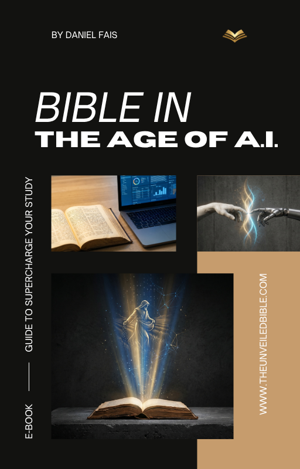

JOURNEY BEYOND THE LETTER

Access the sacred text with a focused and immersive interface.

Each content was created to lead you into a deeper encounter with the Word of God.

For centuries, technology has shaped our interaction with the Word — from scrolls to the Gutenberg press. Today, AI is the "New Digital Scroll". It does not replace the Holy Spirit but it is the most powerful research assistant ever created for the hungry student.
In this exclusive guide, you will master: